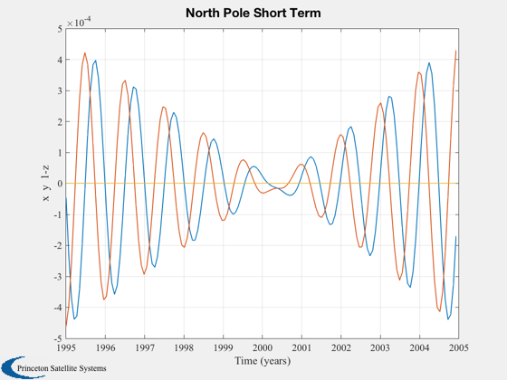
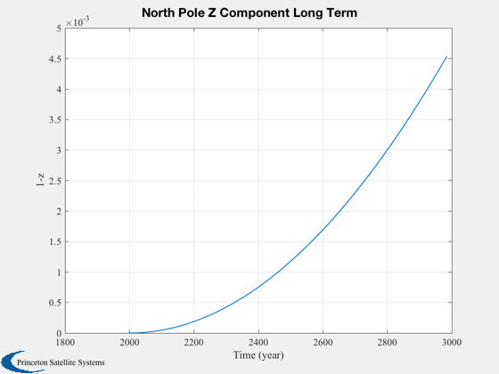

Demonstrate earth nutation, precession and rotation.
------------------------------------------------------------------------
See also Plot2D, Date2JD, JD2T, TruEarth
------------------------------------------------------------------------
Contents
Start date
jD = Date2JD([1995 1 1 0 0 0]);
Look over 10 years by 25 day intervals
x = zeros(3,146);
for k = 1:146,
c = TruEarth(JD2T(jD+25*(k-1)));
x(:,k) = c(:,3);
end
time = (0:145)*25/365.25 + 1995;
Plot the north pole
Plot2D(time,[x(1:2,:);1-x(3,:)],'Time (years)',['x ','y ','1-z'],'North Pole Short Term');

Look over 1000 years by 10 year intervals
x = zeros(1,100);
dD = 3652.50;
for k = 1:100
c = TruEarth( JD2T( jD+dD*(k-1) ) );
x(k) = c(3,3);
end
time = (0:99)*dD/365.25 + 1995;
Plot the z component of the north pole
Plot2D(time,1-x,'Time (year)','1-z','North Pole Z Component Long Term');
